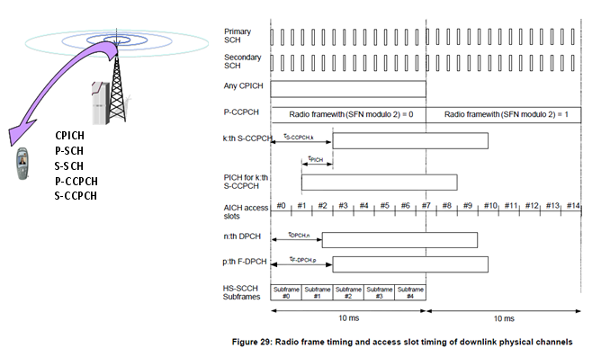

|
UMTS Quick Reference Go Back To Index Home : www.sharetechnote.com |
|
|
Downlink Frame Timing
Once you complete the cell search process described above, UE can figure out the following information about the timing. i) Exact phase reference for downlink channels from CPICH (This is not the timing parameter, but this would very important factors to decode other channels including Timing/Sync related channels). ii) Exact start timing of each slots from P-SCH iii) Exact start timing of each frame from S-SCH iv) System Frame Number for each frame from P-CCPCH (MIB)
Once UE get all the information listed above, the timing for other channels can be deduced by the following diagram (This diagram came from 3GPP TS 25.211). For example, S-CCPCH is transmitted at the multiples of 256 chips delay from the start of CPICH(Start of frame timing). And PICH is transmitted at the specified timing before S-CCPCH.
For the details of these timing value, refer to 25.211 - 7 Timing relationship between physical channels - 7.1 General
Some of these timing offsets are set by higher layer signaling message (e.g, SIB, RRC Connection Setup, Radio Bearer Setup).
S-CCPCH TimingOffset is specified by SIB5 elements : sCCPCH-SystemInformationList.SCCPCH-SystemInformation[0].secondaryCCPCH-Info.modeSpecificInfo.fdd.timingOffset

|